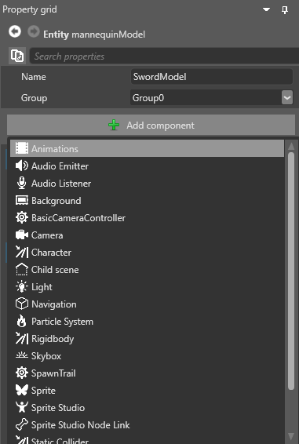
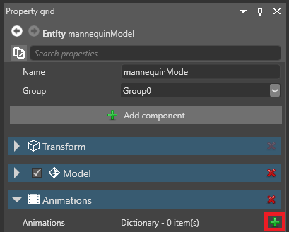
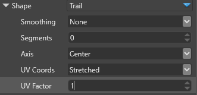
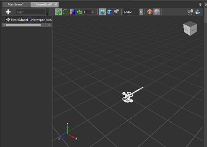

チュートリアル: 軌跡の作成
中級 アーティスト プログラマー
このチュートリアルでは、パーティクルを使用して、剣を振ったときの残影効果を作成する方法を説明します。
1. プロジェクトを作成する
Stride Launcher で、［Start］をクリックして、［New Game］を選択します。
［Create a new game］ダイアログの［Asset Packs］で、［Animated Models］を選択します。Animated Models パックには、この例で使用するアセットが含まれます(ここではパーティクル効果を最初から作成することに注意してください)。

プロジェクトの名前を設定し (例：MyTrailEffect)、［OK］をクリックします。いくつかのエンティティを含む簡単なシーンがロードされます。
このチュートリアルには球体エンティティは必要ないので削除します。
2. モデルとアニメーションをセットアップする
［Asset view］で［Models］フォルダーを開き、mannequinModel をシーンにドラッグ アンド ドロップします。mannequinModel には、この剣撃アニメーションに使用するスケルトン アセットが含まれます。
［mannequinModel］を選択し、［Property grid］で［Add component］>［Animations］の順に選択します。アニメーション コンポーネントがモデルに追加されます。

［Animations］コンポーネントで、
 (［Add a new item to the list］) をクリックします。
(［Add a new item to the list］) をクリックします。
［Clip］の隣の
 (［Pick an asset up］) をクリックします。
(［Pick an asset up］) をクリックします。［Animations］フォルダーを参照し、［Sword_R animation］を選択します。これは、右から左への剣撃のアニメーションです。

マネキンに武器を持たせます。［Asset view］で［Models］フォルダーを参照し、［SwordModel］をエンティティ ツリーの mannequinModel にドラッグします。SwordModel が mannequinModel の子エンティティになります。
エンティティ ツリーで［mannequinModel］を展開して子エンティティを表示し、［SwordModel］を選択します。

右側の［Property grid］で［Add component］をクリックし、［Model Node Link］を選択します。

このコマンドを使用すると、SwordModel を mannequinModel スケルトンのポイントにリンクできます。ターゲットを指定する必要はありません。エンティティは既定で親エンティティ (mannequinModel) を使用します。
［Model Node Link］の［Node Name］フィールドで、［weapon_bone_R］を選択します。これにより、右手で武器を使用するスケルトンのポイントにモデルがアタッチされます。
ここまでの結果を見てみます。［Play］をクリックしてゲームを実行し、結果を確認します。マウスと WASD キーを使用してカメラを移動し、異なる視点からアニメーションを見ることができることを思い出してください。
剣を振るアニメーションができました。次に、残影効果を追加します。
3. 基本的な残影を作成する
最初に基本的な残影を作成し、どのように見えるかを確認します。
Game Studio で［SwordModel］を選択します。［Property grid］で［Add component］をクリックして、［Particle System］を選択します。

パーティクル システム コンポーネントがモデルに追加されます。これを使用して残影効果を作成します。
［Source］をクリックしてプロパティを展開します。
［Emitters］の隣の
(［Add a new item to the list］) をクリックします。これにより、新しいパーティクル エミッターが追加されます。エミッターのプロパティで、［Shape］を［Trail］に設定します。

ここで、Stride のバグのために少し回り道をする必要があります。［Shape］のプロパティで、［Axis］を［Center］に設定します。(シェイプは本当は［Edge］に設定する必要がありますが、［Edge］と［Center］の設定が UI では逆になっています。この問題は Stride 1.9.3 で解決されます。)

［Spawners］の隣の
(［Add a new item to the list］) をクリックして、［Per frame］を選択します。これによりフレーム単位のスポーナーがエミッターに追加され、(たとえば 1 秒ごとではなく) フレームごとに X 個のパーティクルが生成されます。
［Initializers］の隣の
(［Add a new item to the list］) をクリックして、［Velocity］を選択します。
これにより、速度イニシャライザーがエミッターに追加されます。
この時点で、マネキンを操作してシーン内を移動させ、パーティクルの動作を確認できます。もやっとした煙の塊のように見えます。
速度イニシャライザーで、［Velocity min］と［Velocity max］の両方の値を 0, 5, 0 に設定します。
これにより、パーティクルは Y 軸に制限されて、1 枚の非常に薄い紙のようになります。
［Initializers］の隣の
(［Add a new item to the list］) をクリックして、［Direction］を選択します。
これにより、方向イニシャライザーがエミッターに追加されます。
方向イニシャライザーを展開してプロパティを表示します。［Direction min］と［Direction max］の両方を 0, 0, -1 に設定します。これにより、残影が剣撃アニメーションの方向と一致します。
ゲームを実行し、剣撃アニメーションでパーティクルがどのように見えるかを確認します。
残影はできましたが、まだあまりよくありません。長過ぎ、色が同じであり、パーティクルの相互接続がおかしく、消えません。
4. パーティクルを並べ替える
パーティクルはビルボードとしてレンダリングされるので、残影のセグメントの相互接続がおかしくなっています。適切な残影効果を作成するには、生成順序イニシャライザーを追加することでパーティクルを順序に沿って並べ替える必要があります。
SwordModel のプロパティでの［Particle System］>［Source］>［Emitters］で、［Initializers］の隣の
(［Add a new item to the list］) をクリックして、［Spawn Order］を選択します。Note
［Spawn Order (Parent)］または［Spawn Order (Group)］を選択しないように注意してください。

これにより、生成順序イニシャライザーがエミッターに追加されます。プロパティはありませんが、パーティクルに SpawnID が設定されるので、それを使用して並べ替えることができます。
［Emitters］の［Sorting］で、［ByOrder］を選択します。

［Initalizers］の［Velocity］イニシャライザーで、［Velocity min］と［Velocity max］の値をどちらも 0,0.5,0 に変更します。
ゲームを実行します。
パーティクルがまとまって動くようになりました。
5. 長さを変更する
SwordModel のプロパティの［Particle System］>［Source］>［Emitters］で、［Lifespan］を 0.2, 0.2 に変更します。

シーン内でマネキンを動かして、残影が前より早く消えるようになったことを確認します。
6. テクスチャを追加する
色を修正するため、パーティクルに「衝撃波」 テクスチャを適用します。

上のテクスチャ画像 (swoosh.png) をディスクに保存します。
テクスチャをプロジェクトにインポートします。そのためには、［Asset view］で［Add asset］>［Textures］>［Color］の順にクリックし、swoosh.png を選択します。

［SwordModel］のプロパティで、［Emitters］>［Material］の順に展開します。
(［Pick an asset up］) をクリックします。［Textures］フォルダーを参照して、swoosh.png を選択します。
［Alpha-Add］バーを 1 に設定して、100% 放射性にします。
［Particle emitter］のプロパティで、［Shape］を展開し、［UV Coords］を［Stretched］に、［UV Factor］を 1 に設定します。

［UV Rotate］を展開します。［Clockwise］で、90 度を選択します。これによりテクスチャが時計方向に 90 度回転し、「衝撃波」の線が右を向くようになります。

ゲームを実行します。
完成に近づいています。しかし、まだ残影が消えないので、剣の一部であるように見えます。マネキンが剣を振ったら効果が表示されて、振り終わったら表示されなくなるようにする必要があります。
7. パーティクル効果をプレハブにする
これまでは、パーティクル効果を剣にコンポーネントとしてアタッチすることで作成してきました。今度は、効果を剣から切り離し、自由に有効および無効にできる独立したエンティティにします。そのためには、プレハブを作成します。プレハブの詳細については、プレハブのドキュメントを参照してください。
［SwordModel］を右クリックして、［Create prefab from selection］を選択します。
［SwordModel］からプレハブが作成されて、［Asset view］に追加されます。選択したものからプレハブを作成すると、これまでに設定したオプションを簡単にコピーできます。
［SwordModel］自体はプレハブにしません。それを単にテンプレートとして使用し、それからプレハブを作成します。新しいパーティクル効果プレハブとは切り離す必要があるので、右クリックして［Break link to prefab］を選択します。

適切な名前を付けると何事も容易になるので、プレハブの名前を「SwordTrail」に変更します。そのためには、［Asset view］で SwordModel プレハブを右クリックし、［Rename］を選択して「SwordTrail」と入力します。

SwordTrail プレハブをダブルクリックして、プレハブ エディターで開きます。ここでプレハブをカスタマイズします。

プレハブに含まれるエンティティは SwordModel の 1 つだけです。すぐにモデルではなくなるので、このエンティティの名前を SwordTrail に変更します (属しているプレハブと同じ名前)。
SwordTrail エンティティから［Model］および［Model Node Link］コンポーネントを削除します。これらはもう必要ありません。このプレハブはパーティクル効果になります。
同じ理由で、［Particle System］>［Source］>［Emitters］>［Initializers］から［Velocity］イニシャライザーを削除します。ここでは、プレハブ効果を静的に設定します。
SwordTrail のプロパティの［Particle System］>［Source］>［Emitters］>［Spawners］で、［Loop］を［One shot］に設定し、［Duration］を 0.2, 0.2 に変更します。
パーティクル効果用に独立したプレハブを作成したので、剣モデルにパーティクル効果を残しておく必要はありません。メイン シーンで［SwordModel］を選択し、［Particle System］コンポーネントを削除します。
8. スクリプトで効果のプレハブを制御する
剣の残影効果のプレハブを作成しました。次に、スクリプトを使用して、マネキンが剣を振るたびに効果を生成し、数フレーム後に効果を削除します。
Visual Studio でプロジェクトを開きます。それには、Game Studio で Visual Studio アイコン (［Open in IDE］) をクリックします。

Visual Studio でゲーム プロジェクトを右クリックし、［追加］>［新しいアイテム］を選択します。[名前］フィールドにスクリプトの名前として「SpawnTrail」と入力し、［追加］をクリックします。
スクリプトの内容を、スクリプト SpawnTrail.cs のコードに置き換えます。
これは、Stride に含まれるプレハブ インスタンス スクリプトを変更したものです。イベントまたはキーの押下をリッスンするのではなく、剣撃アニメーションのようなアニメーションの変化をリッスンします。
スクリプトで、
namespaceが正しいことを確認します。これは通常、Stride プロジェクトの名前 (MyTrailEffect など) と一致します。
スクリプトと Visual Studio プロジェクトを保存します (Ctrl + Shift + S)。
Game Studio でアセンブリを再ロードします。

［MainScene］で［SwordModel］を選択します。

SwordModel のプロパティで、［Add component］をクリックし、SpawnTrail スクリプトを選択します。コンポーネントとしてスクリプトが追加されます。

SpawnTrail コンポーネントのプロパティで、［Source］の隣の
(［Pick an asset up］) をクリックします。
エンティティ ピッカーで、SwordTrail プレハブを選択します。
SpawnTrail コンポーネントの［Animation］フィールドで、手のアイコン (［Pick an asset up］) をクリックします。 ［Select an asset］ウィンドウが開きます。
左側のペインで mannequinModel を選択して［OK］をクリックします。

- ゲームを実行します。
スクリプトにより、剣撃アニメーションが開始するとパーティクル効果が表示され、終了すると表示されなくなります。
9. 残影の開始時刻を調整する
Sword_R アニメーション アセットを選択し、右下の［Asset preview］で剣撃アニメーションを確認します(［Asset preview］が表示されない場合は、［View］>［Asset preview］を選択します)。
［Asset preview］にアニメーションの秒数が表示されます。よく見ると、アニメーションが開始してから約 0.1 秒経つまで、マネキンは剣を振り下ろし始めていないことがわかります。そこで、マネキンが剣を振るのと同時に残影効果が生成されるように設定します。
［SwordModel］を選択します。
SpawnTrail のプロパティで、［Start time］を 0.06 に設定します。つまり、剣撃アニメーションが開始してから 0.06 秒経つまで残影効果は生成されず、わずかですがより自然に見えます。好みに合わせて自由に試してみてください。
ゲームを実行して結果を確認します。
残影効果が若干滑らかではなく、「クモの巣」効果が発生していることに気付くかもしれません。さらに曲げてみましょう。
10. 残影を曲線にする
SwordTrail プレハブの SwordTrail エンティティの［Particle System］>［Source］>［Emitters］>［Shape］で、［Smoothing］を［Best］に、［Segments］を 5 に設定します。
これにより、残影のパーティクルの間に 3 つの頂点が追加されます。はるかに滑らかな効果を作るには、これで十分です。
ゲームを実行します。
剣の柄がある内側の曲線は前より滑らかになりました。しかし、剣の先端の曲線はまだ滑らかではありません。

より目立つ剣の先端の効果を滑らかにする必要があります。そのためには、パーティクルの向きを反転します。
SwordTrail プレハブの［Transform］コンポーネントのプロパティで、［Position］を 0, 0, -1 に変更します。
このようにすると、パーティクル効果の開始位置が剣の先端に移動します。
ゲームを実行します。
新しい問題が発生しています。パーティクル効果を剣の先端に移動したため、パーティクルが先端から飛び散っています。パーティクルの向きを逆にして、剣の刃に沿って柄の方に動くようにする必要があります。
［Particle System］>［Source］>［Emitters］>［Initializers］の［Direction］イニシャライザーで、［Direction min］と［Direction max］をどちらも 0, 0, 1 に変更します。これで残影の方向が逆になります。

ゲームを実行します。
以上で終了です。残影効果を一から作成しました。後は自分でいろいろ試してください。
サンプル プロジェクト
複数のパーティクル効果が組み合わせた、さらに精巧な残影の例を次に示します。
動作を確認する場合は、プロジェクト ファイルをダウンロードして実行してみてください。